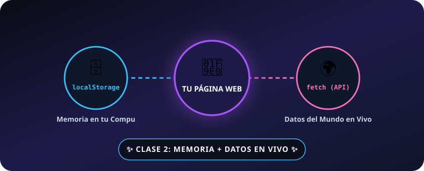

La clase pasada subimos nuestra web a un servidor en Internet. Hoy vamos a descubrir cómo hace una página para recordar quién sos, guardar el récord de tu juego y pedir datos en vivo a otros servidores.
Cuando guardás un dato en una variable común de JavaScript (como var puntos = 10), es como escribir en un pizarrón: cuando tocás Recargar (F5) o cerrás la pestaña, el navegador borra todo y empieza de cero. Para que NO se borre, los navegadores tienen un cajón secreto llamado localStorage.
Usa let puntos = 0; — Si recargás la página con F5, vuelve a 0.
localStorage (Con Memoria)
Usa localStorage.setItem() — ¡Probá sumar monedas y tocar F5!
F12 (o clic derecho ➔ Inspeccionar).99999 como una hacker 😎).
Lo más genial de localStorage es que todas las páginas de tu misma carpeta o URL comparten la misma memoria. Si elegís tu nombre o encontrás una "Llave Mágica" en tu página principal, ¡cuando saltás al archivo de tu juego o al Capítulo 2 de tu cuento, ya sabe que la tenés!
Tocá objetos para guardarlos en tu mochila antes de ir a otra página:
Entrá al archivo vecino juego-con-memoria.html. Vas a ver cómo te saluda con el nombre y el color que guardaste acá y cómo recuerda tu Récord Máximo aunque cierres el navegador.
localStorage guarda cosas en tu dispositivo. Pero ¿cómo hace una web para saber cuánto hace de temperatura hoy o traer cosas nuevas de Internet sin que vos las escribas en el HTML? Usa una orden llamada fetch() ("ir a buscar") para pedirle datos en vivo a otros servidores públicos (llamados APIs).
Al tocar el botón, tu navegador viaja en medio segundo al servidor meteorológico Open-Meteo y le pide la temperatura actual real:
Esta imagen NO está en nuestra carpeta. Cada vez que tocás el botón, fetch() le pide a un servidor de perritos que nos mande la URL de una foto distinta:
Ahora que ya sabés cómo funciona, podés abrir tu juego o tu cuento en tu compu y pedirle a Antigravity cualquiera de estos superpoderes (¡y volver a subir la carpeta a Netlify para actualizar tu web a la Versión 2.0!):
Que el juego guarde en localStorage el puntaje más alto y el nombre del jugador aunque cierre la página.
Que el cuento recuerde en qué capítulo te quedaste y qué decisiones tomaste la última vez.
Que quien entre elija su avatar y colores favoritos y le queden guardados cada vez que visite tu URL.